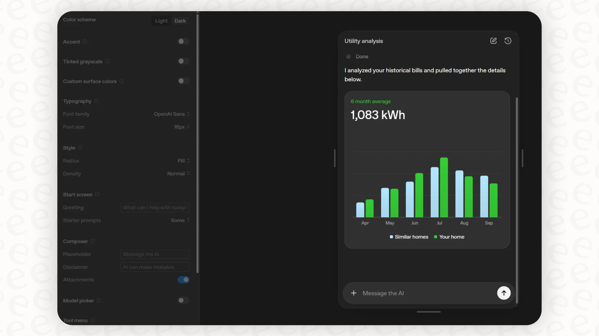
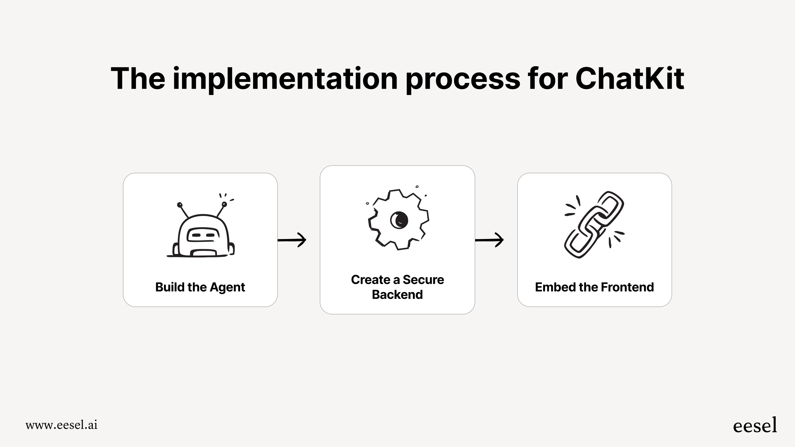

Chat Applications Overview: AI in Financial Services#
Duration: 30 minutes Learning Objectives:
Understand the landscape of AI chat applications in finance
Compare local vs. cloud-based AI development approaches
Learn about OpenAI’s ChatKit framework
Understand the architecture of financial AI assistants
Introduction to AI Chat Applications#
AI-powered chat interfaces are transforming how we interact with financial data and services. Modern AI chat applications can:
Analyze complex financial documents (10-Ks, 10-Qs, earnings reports)
Answer natural language queries about companies and markets
Synthesize data from multiple sources in real-time
Provide personalized financial insights based on user context

Modern AI chat applications combine LLMs with retrieval, tools, and memory. Source: Anthropic - Building Effective Agents
Real-World Examples in Finance#
Bloomberg GPT: Financial language model for market analysis
Morgan Stanley’s AI Assistant: Investment research tool for financial advisors
Stripe’s Support Bot: Handles developer and merchant queries
Personal finance chatbots: Budgeting, expense tracking, and investment advice
Local vs. Cloud AI Development#
Cloud-Based Development (OpenAI API)#
Advantages:
No hardware requirements
Access to state-of-the-art models (GPT-4, GPT-4o)
Scalable infrastructure
Regular model updates
No model maintenance
Considerations:
API costs per token
Data privacy concerns
Internet dependency
Rate limits
Best for: Production applications, prototyping, applications requiring latest capabilities
Local LLM Deployment#
Advantages:
Complete data privacy
No per-request costs
No internet dependency
Full control over model
Considerations:
Hardware requirements (GPU)
Model size constraints
Performance limitations
Manual updates
Tools for local deployment:
Ollama - Run Llama 2, Mistral, and other models locally
LM Studio - GUI for running local models
vLLM - High-performance inference engine
Best for: Privacy-sensitive applications, high-volume internal tools, offline requirements
What is ChatKit?#
OpenAI ChatKit is a framework for building production-ready AI chat experiences. It’s designed to simplify the process of creating custom chat interfaces without building everything from scratch.

Example chat interface built with OpenAI’s ChatKit framework. Source: EESEL AI
Key Features#
Drop-in chat component - Minimal setup required
Deep UI customization - Match your brand and design
Built-in response streaming - Real-time message display
Tool and workflow integration - Connect to external data sources
Rich interactive widgets - Charts, tables, buttons
Attachment handling - Upload documents and images
Thread management - Multi-conversation support
Source annotations - Cite where information comes from
Why ChatKit for Financial Applications?#
Production-ready: Built by OpenAI with enterprise features
Compliance-friendly: Source citations for audit trails
Extensible: Easy to integrate with financial APIs
Framework-agnostic: Works with React, Vue, vanilla JS
Secure: Built-in authentication and session management

ChatKit implementation workflow: Build Agent, Secure Backend, Embed Frontend. Source: EESEL AI
ChatKit vs. Building from Scratch#
Feature |
ChatKit |
Custom Build |
|---|---|---|
Time to MVP |
Hours |
Weeks |
Streaming support |
Built-in |
Manual implementation |
UI components |
Included |
Build yourself |
Tool integration |
Built-in patterns |
Design from scratch |
Maintenance |
Handled by OpenAI |
Your responsibility |
Architecture: Financial Company Research Assistant#
Today we’ll build a Company Research Assistant that combines:
SEC EDGAR filings - Official company disclosures
Stock price data - Real-time market information
AI analysis - Natural language interface
System Architecture#

Tool routing enables the assistant to choose between SEC EDGAR and Yahoo Finance data sources. Source: Anthropic - Building Effective Agents
+------------------+
| User Browser |
| (Next.js UI) |
+--------+---------+
|
v
+------------------+
| Next.js API |
| Routes |
+--------+---------+
|
+------------------+
| |
v v
+------------------+ +------------------+
| OpenAI API | | Data Sources |
| (ChatKit) | | - SEC EDGAR |
+------------------+ | - Yahoo Finance |
+------------------+
Data Flow#
User asks: “What was Apple’s revenue in the latest quarter?”
ChatKit routes to your custom tool
Your API fetches latest 10-Q from SEC EDGAR
Your API gets current stock price from Yahoo Finance
AI analyzes the data and formulates response
User receives natural language answer with sources
Resources & Further Reading#
ChatKit Documentation#
ChatKit Studio - Visual builder
Financial Data APIs#
edgartools Library - Python library for SEC data
yfinance Library - Yahoo Finance data
AI Development Best Practices#
Key Takeaways#
AI chat applications are powerful tools for financial analysis
Cloud-based development (like ChatKit) enables rapid prototyping
ChatKit provides production-ready components out of the box
Financial data integration requires understanding multiple APIs
Architecture matters - plan your data flow before coding
Next Steps#
In the next section, we’ll dive into Next.js fundamentals and learn how to set up our development environment.
Checkpoint Questions:
What are the main tradeoffs between local and cloud AI development?
What makes ChatKit suitable for financial applications?
What data sources will we use for our company research assistant?